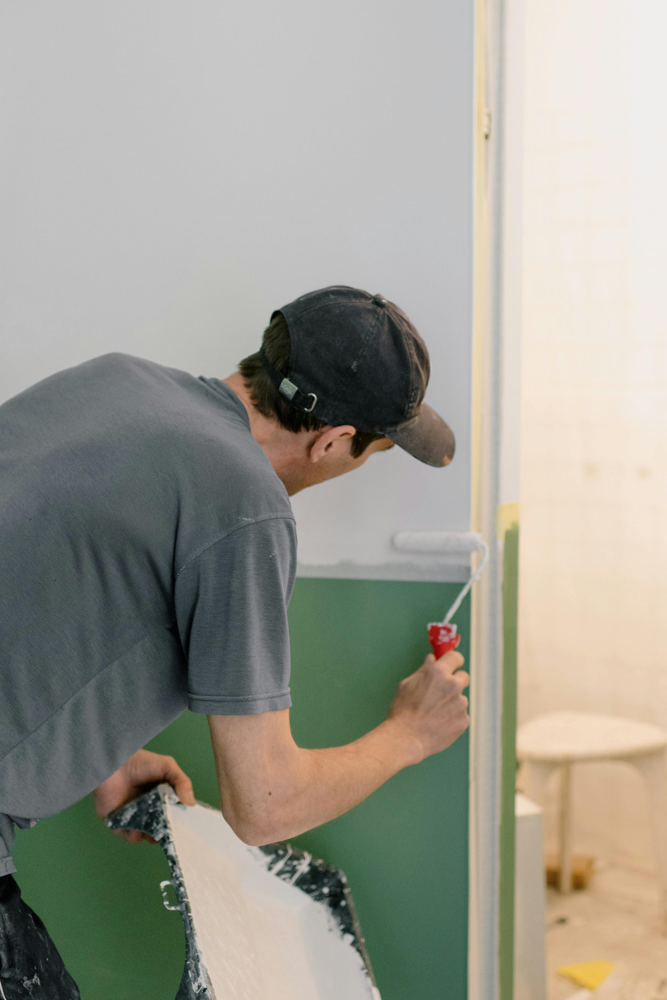
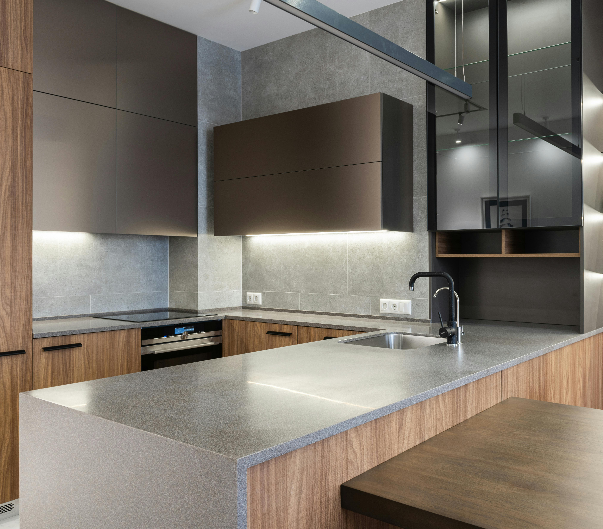
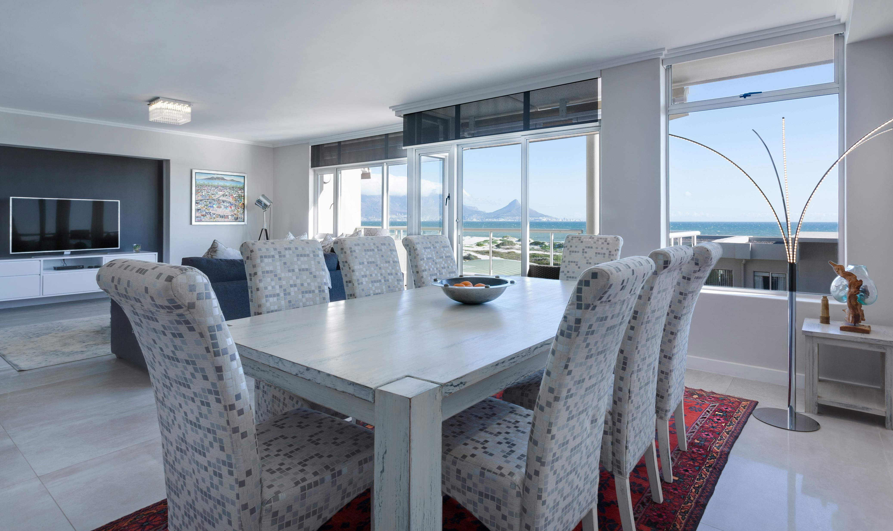
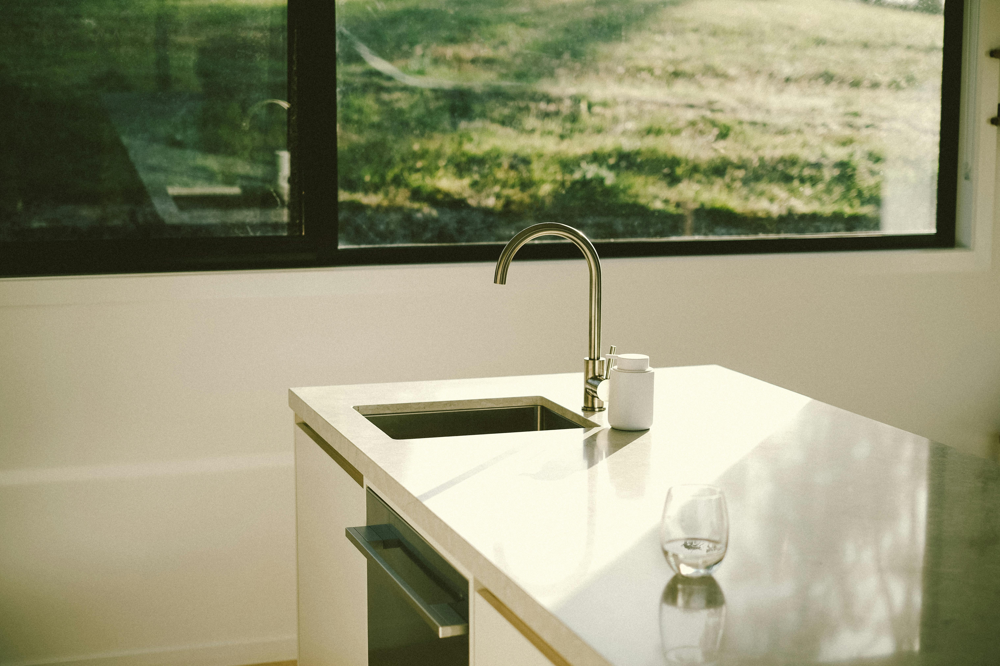

Interior design
Welcoming spaces organised around how you really live.
INTERIORS WITH PERSONALITY
Colour, craftsmanship and considered design for the spaces we call home.
Discover our approach
THE PERSON BEHIND THE WORK
Interiors that reflect the people who live in them.
At Living Colour Interiors, Greg brings together interior design and professional painting to create welcoming, personal spaces. The focus is on thoughtful colour choices, fine details and making a home feel genuinely yours.
Get in touch ↗SPACES & INSPIRATION
Some interior imagery from the original design project, presented as inspiration rather than verified completed work.



WHAT WE BELIEVE IN
Welcoming spaces organised around how you really live.
Beautiful finishes with care and attention to the details.
Palettes that bring warmth, character and balance.
START A CONVERSATION
Have an interiors project in mind? Contact Living Colour directly using the details below.
Email Living Colour ↗Gold Coast, Queensland · 0481 389 398
Archived portfolio project. Please verify business contact details before using.